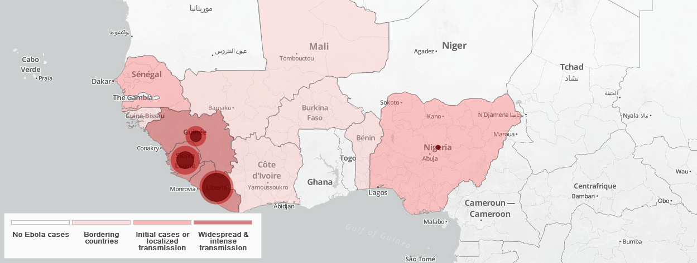
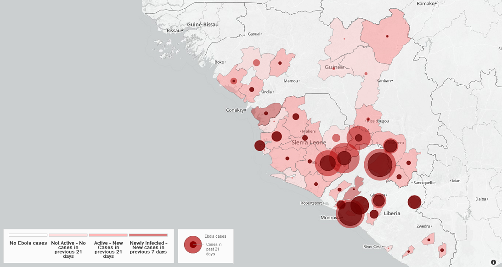

The roadmap aims to guide and coordinate the international response to the outbreak of Ebola virus disease in west Africa.
The goal is to stop Ebola transmission in affected countries within 6-9 months and prevent international spread.
Ebola is a rare and deadly disease caused by infection with one of the Ebola virus strains (Zaire, Sudan, Bundibugyo, or Tai Forest virus). Ebola viruses are found in several African countries. Ebola was discovered in 1976 near the Ebola River in what is now the Democratic Republic of the Congo.
The outbreak of Ebola in West Africa is unprecedented in its scale, severity, and complexity. The severely affected countries are struggling to control the escalating outbreak against a backdrop of weak health systems, significant deficits in capacity, and rampant fear.
Strengthen human resource, and response capacities in areas of intense and widespread transmission. Ensure emergency and immediate response in countries with an initial case(s) or with localized transmission. Strengthen preparedness of all countries to rapidly detect and respond to an Ebola.
The map below shows the West African countries of Guinea, Liberia and Sierra Leone which are the most severely affected. New cases are now appearing in Nigeria and Senegal. All countries with land borders to the affected countries are at risk.
The map below shows the location of cases throughout the countries with most intense transmission, differentiating the cumulative number of cases to date in each area from the number of cases that have occurred within the past 21 days. The dark red circles show that a large percentage of cases occurred in the 21 days preceding 14 September 2014. Nine districts in which previous cases were confirmed have reported no cases during the 21 days prior to the end of 14 September (six districts in Guinea, one in Sierra Leone, and two in Liberia). Two previously uninfected areas reported initial cases during the seven days prior to the end of 14 September. In Guinea, there has been one suspected case and one confirmed case in the Dalaba area. In Liberia, four probable and two suspected cases have now been reported in the Maryland area, which borders Côte d’Ivoire.
The total number of probable, confirmed and suspected cases in the current outbreak of Ebola virus disease (Ebola) in West Africa was 5335, with 2622 deaths, as at the end of 14 September 2014. Countries affected are Guinea, Liberia, Nigeria, Senegal and Sierra Leone. The charts below show the total number of cases by country that have been reported in each epidemiological week between the start of 30 December 2013 (start of epidemiological week 1) and end 14 September 2014 (end of epidemiological week 37). The latest information on cases and deaths can be found on the WHO Disease Outbreak News.
In countries with widespread and intense transmission the objective is to achieve full geographic coverage with complementary Ebola response activities. The key milestone is to reverse the trend in new cases and infected areas within 3 months, stop transmission in capital cities and major ports, and stop all residual transmission within 6-9 months.
The map below shows the status of the emergency response operations in the countries with widespread and intense transmission as at 14 September 2014. The map shows for each affeted location the status of the relevant Ebola intervention activities such as treatment centers, contact tracing, safe burial, laboratory testing and social mobilisation.
In countries with initial cases or localized transmission the objective is to ensure emergency and immediate application of comprehensive Ebola response interventions. The key milestone is to stop all transmission within 8 weeks of index case.
A second meeting of the Emergency Committee convened by the Director-General under the International Health Regulations (2005) [IHR (2005)] regarding the 2014 Ebola outbreak in West Africa has begun discussion via email this week. The meeting will review the status of the outbreak as a public health emergency of international concern, and assess the impact of current temporary measures to contain the outbreak and reduce international spread.
WHO and a range of partners are supporting the development of Ebola surveillance, preparedness and response plans in all non-affected African countries. Priority activities include active surveillance for clusters of unexplained death due to fever; provision of information to the general public and travellers; the identification of isolation units; provision of verified access to a WHO-accredited laboratory; and the establishment of a strategy for identifying and monitoring contacts of any suspected case.
Work is ongoing to strengthen laboratory capacity in the WHO African region, including a collaboration between all members of the Emerging and Dangerous Pathogen Laboratory Network in the WHO African region that has now mapped the location and capacity of all laboratories able to test for Ebola infection. Logistical systems for sample shipment and the procurement of essential reagents and supplies, including Ebola-positive controls, are now in place at key locations.
WHO is monitoring daily travel, trade, and transport measures adopted in response to Ebola, and together with international partners has established an international travel and transport task force to provide a coordinated international response, and to monitor the situation and provide timely information to the maritime and aviation sectors.
On 16 September OCHA presented a US $975 million summary of the collective requirements – and activities and plans of all UN agencies and other stakeholders – to defeat the ebola outbreak and mitigate the immediate and longer-term social, economic, development and security consequences in ebola-affected affected countries and the region. These requirements – outlined in the Overview of Needs and Requirements document – depicts the shared plans and financial requirements of the growing number of international partners involved in the response.
WHO’s ebola response roadmap presented here summarizes a consolidated view of the estimated US $570 million global resources required over the next six months – by national governments, UN agencies and other partners – for the health response to stop Ebola transmission.
Updated as of September 25, 2014
| Mission critical action | Total estimated resource requirement (USD) |
Estimated resources to be implemented through WHO (USD) | ||||
|---|---|---|---|---|---|---|
| Crisis management and coordination | Procurement and response teams | Managed funds for countries and partners | Total implemented through WHO |
|||
| 1. Identify and trace people with Ebola | 189,500,000 | 14,000,000 | 35,000,000 | 24,000,000 | 73,000,000 | |
| 2. Safe and dignified burials | 23,800,000 | 2,000,000 | 5,000,000 | 3,000,000 | 10,000,000 | |
| 3. Care for persons with Ebola and infection control | 331,200,000 | 25,000,000 | 40,000,000 | 40,000,000 | 105,000,000 | |
| 4. Medical care for responders | 14,000,000 | 10,000,000 | 10,000,000 | |||
| 5. Provision of food security and nutrition | 107,000,000 | |||||
| 6. Access to basic (including non-Ebola health) services | 97,100,000 | 3,000,000 | 18,000,000 | 15,000,000 | 36,000,000 | |
| 7. Cash incentives for workers | 2,500,000 | |||||
| 8. Recovery and economy | 64,800,000 | |||||
| 9. Reliable supplies of materials and equipment | 42,600,000 | |||||
| 10. Transport and fuel | 23,400,000 | |||||
| 11. Social mobilization and community engagement | 45,800,000 | 2,000,000 | 2,000,000 | 4,000,000 | 8,000,000 | |
| 12. Messaging | 3,200,000 | 2,000,000 | 2,000,000 | |||
| Multi-Facted/Preparedness | 30,500,000 | 2,000,000 | 5,000,000 | 9,000,000 | 16,000,000 | |
| Total | 975,400,000 | 60,000,000 | 105,000,000 | 95,000,000 | 260,000,000 | |
| Contributors | Crisis management and coordination | Procurement and response teams | Managed funds for countries and partners | Funding allocation to be decided | Total |
|---|---|---|---|---|---|
| Funds received (USD) | |||||
| Member State contributions | |||||
| Andorra | 8,021 | 12,032 | 20,053 | ||
| Australia - Department of Foreign Affairs and Trade | 466,853 | 466,853 | |||
| Canada - Department of Foreign Affairs, Trade and Development (DFATD) | 367,309 | 550,964 | 918,274 | ||
| Canada - Public Health Agency of Canada (PHAC) | 67,952 | 101,928 | 169,881 | ||
| Estonia | 26,350 | 39,526 | 65,876 | ||
| Germany | 527,009 | 790,514 | 1,317,523 | ||
| India | 500,000 | 500,000 | |||
| Japan | 340,000 | 510,000 | 850,000 | ||
| Kuwait | 2,000,000 | 3,000,000 | 5,000,000 | ||
| Luxembourg | 53,476 | 80,213 | 133,689 | ||
| Norway | 638,570 | 957,854 | 1,596,424 | ||
| Republic of Korea | 180,000 | 270,000 | 450,000 | ||
| Sweden | 900,000 | 900,000 | |||
| The United States of America - USAID | 2,560,000 | 3,840,000 | 6,400,000 | ||
| Non-Member State contributions | |||||
| African Development Bank - Strengthening West Africa’s Public Health Systems Response to the Ebola Crisis (SWAPHS) | 12,778,900 | 19,168,350 | 6,700,000 | 38,647,250 | |
| African Development Bank - Liberia | 572,000 | 428,000 | 1,000,000 | ||
| African Development Bank - Sierra Leone | 550,600 | 449,400 | 1,000,000 | ||
| African Development Bank - Nigeria | 604,100 | 395,900 | 1,000,000 | ||
| African Development Bank - Guinea | 411,500 | 588,500 | 1,000,000 | ||
| BHP Billiton | 160,000 | 240,000 | 400,000 | ||
| Bill & Melinda Gates Foundation | 2,029,570 | 3,044,355 | 5,073,925 | ||
| CERF - Nigeria | 1,063,443 | 1,063,443 | |||
| European Commission - Directorate-General Humanitarian Aid and Civil Protection (ECHO) | 267,380 | 401,069 | 668,449 | ||
| OPEC Fund for International Development (OFID) | 200,000 | 300,000 | 500,000 | ||
| The UnitedNations Development Programme (UNDP) | 17,688 | 17,688 | |||
| World Bank – Guinea | 2,300,000 | 2,300,000 | |||
| World Bank – Liberia | 19,121,406 | 19,121,406 | |||
| World Bank – Sierra Leone | 2,800,000 | 2,800,000 | |||
| Sub-total funds received | 24,842,735 | 59,856,865 | 6,700,000 | 1,981,131 | 93,380,731 |
| Firm pledges (USD) | |||||
| Member State contributions | |||||
| Australia - Department of Health | 466,853 | 466,853 | |||
| Australia - Department of Foreign Affairs and Trade | 2,334,267 | 2,334,267 | |||
| Canada - Public Health Agency of Canada (PHAC) | 169,881 | 169,881 | |||
| China | 2,000,000 | 2,000,000 | |||
| Finland | 267,379 | 401,069 | 668,448 | ||
| Germany | 4,812,834 | 7,219,252 | 12,032,086 | ||
| Japan | 1,000,000 | 1,000,000 | |||
| Netherlands | 6,684,492 | 6,684,492 | |||
| New Zealand | 418,760 | 418,760 | |||
| Qatar | 400,000 | 600,000 | 1,000,000 | ||
| Russia | 50,338 | 50,338 | |||
| Slovak Republic | 20,053 | 20,053 | |||
| Thailand | 156,495 | 156,495 | |||
| United Kingdom of Great Britain & Northern Ireland – the Scottish Government | 337,838 | 506,757 | 844,595 | ||
| Non-Member State contributions | |||||
| African Development Bank - Strengthening West Africa’s Public Health Systems Response to the Ebola Crisis (SWAPHS) Future tranches | 17,352,751 | 17,352,751 | |||
| African Union | 700,000 | 700,000 | |||
| World Bank – Guinea Bissau | 500,000 | 500,000 | |||
| Sub-total firm pledges | 5,818,052 | 10,900,763 | 29,680,204 | 46,399,019 | |
| Total funds received and firm pledges | 30,660,787 | 70,757,628 | 6,700,000 | 31,661,335 | 139,779,751 |
*Estimated current distribution of funds which can be of used flexibly to address the response needs
Funds received for the Ebola response March to August 2014 prior to launch of roadmap